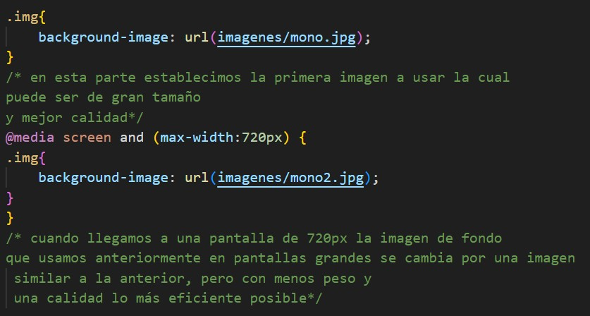

Cuando colocamos en una imagen el 100% de width siempre el elemento contenedor será el responsable del comportamiento de su tamaño, pero cuando una pantalla tiene tamaños grandes y la imagen está en formato jpg o png se empieza a distorsionar y pixelear.
Hay que tener cuidado con la propiedad with cuando el elemento contenedor es más grande en comparación con su imagen y la resolución de la imagen ya que se vuelve más pesado.
Para evitar este tipo de problemas podemos usar la propiedad max-width esto permite o mejor dicho evita que aumente de tamaño más a ya de su tamaño original, pero si tiene la habilidad para que se vuelva pequeña, evitando barras de scroll innecesarias, el problema es que se general los espacios en blanco, si no existen otros elementos puede verse de manera rara los márgenes blancos, hay que cuidar para evitarlo.
.img { Width-max: 100%}
Nota : en diseño responsivo ya no se puede colocar la propiedad widht directamente en la imagen ya que se interponen, aunque existen navegadores que pueden filtrarlo por la especificidad.
Cuando tenemos las imágenes en el fondo colocando en el css, las imágenes de fondo también pueden responder al cambio de tamaño. Esto puede ser de tres formas diferentes
imagen Background-size: container
imagen Background-size: 100% 100%
imagen Background-size: cover
Una imagen grande puede ser perfecta en una pantalla de computadora grande. Pero en pantallas de menor tamaño la imagen se vuelve muy pesada. Para reducir la carga, o cualquier otra razón, se puede usar media queries para mostrar diferentes imágenes en diferentes dispositivos. Para entenderlo mejor colocaremos la misma imagen, pero con reducciones o acomodos especiales que le permitan mejorar la carga sin la pérdida de calidad, por ejemplo:
Usando este tipo de métodos podemos mejorar la eficiencia de carga de nuestras páginas web sin que el usuario las perciba.
El elemento “picture” funciona de una manera similar a
los elementos “video” y “audio”. Se pueden configurar diferentes
fuentes, y la primera fuente que se ajusta a las preferencias es
la que se esta utilizando. Muy similar al anterior punto con la
gran diferencia que esta será utilizada principalmente en el HTML
y no en el CSS como lo vimos anteriormente.
Por ejemplo:
Como Podemos notar al abrir la etiqueta picture tendré que colocar desde la imagen más chica hasta la imagen más grande en ese orden si lo asemos al revés la computadora no lo comprenderá y no realizará alguna acción.